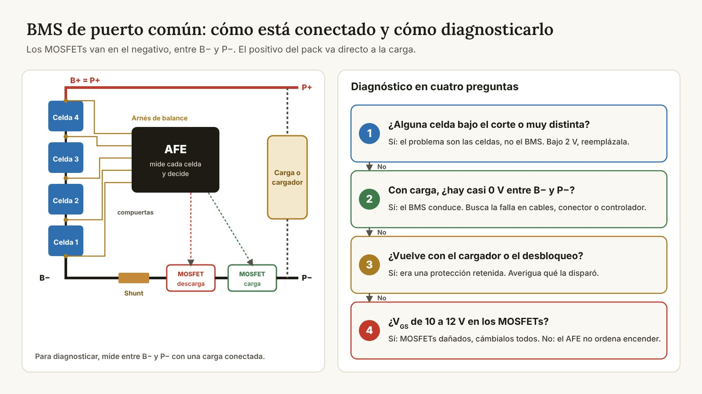
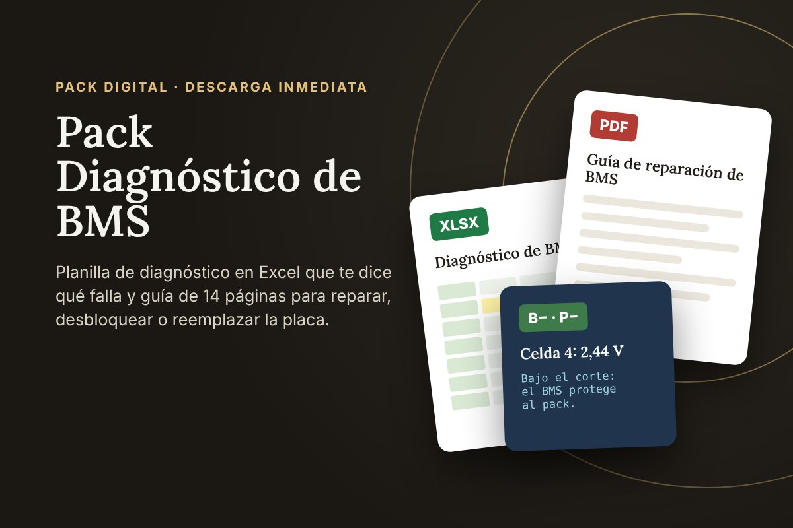

Pack Diagnóstico de BMS: encuentra la falla con tus mediciones
Todo lo de esta guía, convertido en herramientas para el banco de trabajo: anotas lo que mide el multímetro y la planilla te dice qué falla y qué hacer.
- Planilla en Excel (8 hojas): calcula el voltaje de cada celda desde las lecturas del arnés y marca las que están bajo el corte, en nivel crítico o desbalanceadas; interpreta la salida con carga y el voltaje de compuerta; entrega el diagnóstico completo; compara reparar con reemplazar y te da la especificación del BMS nuevo.
- Guía en PDF (14 páginas): seguridad, herramientas y carga de prueba, cómo reconocer una placa, diagnóstico paso a paso, cómo probar y cambiar MOSFETs, desbloqueo según el tipo de BMS, orden de conexión, parámetros para configurar un BMS inteligente, cuándo descartar una celda y una hoja de diagnóstico imprimible.
Al pagar descargas un archivo .zip con la planilla (.xlsx), la guía (.pdf) y las instrucciones. La planilla se abre en Excel, LibreOffice y Google Sheets. Licencia de uso personal. Por ser contenido digital de descarga inmediata, no tiene derecho a retracto; si un archivo llega dañado o no abre, te lo reponemos o devolvemos el dinero.
Anatomía y bloques funcionales de una placa BMS
El BMS (Battery Management System, sistema de gestión de batería) es la placa que protege un pack de litio. Su misión no es solo vigilar el voltaje total, sino garantizar que ninguna celda trabaje fuera de su rango seguro de voltaje, corriente y temperatura. Una placa típica, desde las de 3S de un taladro hasta las de 16S o más de una moto eléctrica, tiene cuatro bloques:
- AFE y microcontrolador: el AFE (Analog Front End) es el chip que mide cada celda. Ejemplos son la familia BQ76920, BQ76930 y BQ76940 de Texas Instruments (el BQ76940 admite de 9 a 15 celdas y mide con un ADC de 14 bits), el ISL94202 de Renesas o el SH367309 de Sinowealth. En las placas simples, un chip de protección dedicado cumple la misma función sin microcontrolador.
- Red de balanceo pasivo: un transistor pequeño y una resistencia por celda. Durante el final de la carga, descarga en forma de calor a las celdas más llenas. Con resistencias de 47 a 100 Ω, la corriente queda entre unos 40 y 90 mA; muchos BMS comerciales balancean con apenas 30 a 60 mA.
- Banco de MOSFETs de potencia: transistores MOSFET de canal N, varios en paralelo, cada uno con una resistencia en conducción (RDS(on)) de pocos miliohmios. En un BMS de puerto común van espalda con espalda en el negativo, entre B− y P−: un grupo corta la descarga y otro la carga. En uno de puerto separado, la carga entra por un terminal propio (C−).
- Shunt y protección térmica: una resistencia de muy bajo valor (0,5 a 2 mΩ) por la que pasa toda la corriente; su caída de voltaje permite medir la corriente y detectar sobrecorriente y cortocircuito. Los BMS inteligentes además integran esa medición para estimar la carga restante. Uno o más termistores NTC, pegados a las celdas, cortan si la temperatura sale de rango.
Síntomas típicos de falla y sus causas
Cuando una batería no entrega energía o no recibe carga, el BMS es el primer sospechoso, pero muy a menudo solo está haciendo su trabajo: cortó porque una celda está mal. Por eso el diagnóstico siempre empieza por las celdas. Los síntomas más comunes:
| Síntoma | Causa probable | Diagnóstico rápido |
|---|---|---|
| Voltaje normal entre B− y B+, pero sin voltaje útil entre P− y P+ | BMS en protección (subtensión, sobrecorriente o cortocircuito previo) o MOSFETs de descarga dañados. | Mide cada celda en el conector de balance. Si alguna está bajo el corte por subtensión (2,5 a 3,0 V en Li-ion, según el BMS), el BMS está haciendo su trabajo. |
| Carga, pero se apaga al acelerar o al exigirle fuerza | Una celda con alta resistencia interna que cae bajo el corte con carga, o un BMS con límite de corriente menor que lo que pide el motor. Más raro: MOSFETs degradados. | Mide las celdas bajo carga: la que cae mucho más que las otras es la culpable. Luego compara la corriente del controlador con la del BMS. |
| Una celda se descarga sola, aun guardada | Transistor de balanceo de esa celda en cortocircuito, que la descarga sin parar; o una celda con autodescarga interna. | Con el cargador desconectado, la resistencia de balanceo de esa celda está tibia. Si está fría, desconecta el arnés: si la celda sigue bajando, el problema es la celda. |
| El cargador no inicia la carga | BMS en protección con la salida cortada (algunos cargadores necesitan ver voltaje en los bornes para partir), celdas muy descargadas o protección por temperatura. | Mide las celdas. Si todas están sobre el corte, prueba el desbloqueo del paso 3. Si alguna está bajo 2 V, no la cargues (ver advertencia más abajo). |
Diagnóstico paso a paso en el banco de trabajo
Trabaja sobre una superficie no conductora, sin anillos ni pulseras, con las puntas del multímetro aisladas hasta la punta y la batería lejos de materiales inflamables. Sigue esta secuencia en orden:
Paso 1: Mide cada celda en el conector de balance
Desconecta el arnés de balance de la placa. Deja la punta negra del multímetro en el cable B− (el negativo del pack) y mide cada pin hacia arriba. El voltaje de cada celda es la diferencia entre un pin y el anterior:
Pin 0 (B-) : 0,00 V (referencia)
Pin 1 (B1+) : 3,82 V -> celda 1 = 3,82 V
Pin 2 (B2+) : 7,64 V -> celda 2 = 3,82 V
Pin 3 (B3+) : 11,46 V -> celda 3 = 3,82 V
Pin 4 (B4+) : 13,90 V -> celda 4 = 2,44 V <-- bajo el corte por subtensión
Paso 2: Revisa la salida con una carga conectada
Si todas las celdas están sanas y parecidas entre sí (por ejemplo, entre 3,6 y 4,1 V y con menos de 50 mV de diferencia), reconecta el arnés respetando el orden de conexión y pon una carga de prueba entre P+ y P−: una ampolleta de 12 V para auto o una resistencia de potencia. Sin carga, el voltaje en P− queda flotando y la medición engaña.
- Voltaje entre B− y P− cercano a 0 V (con la carga de prueba, unos pocos milivolts; mídelo en la escala de 200 mV): los MOSFETs conducen y el BMS entrega energía. Si el equipo igual no funciona, la falla está en otra parte (conector, cable, controlador o comunicación).
- Voltaje entre B− y P− casi igual al del pack: el BMS tiene la salida cortada. Sigue con el paso 3.
Paso 3: Intenta el desbloqueo
Muchos BMS quedan con la protección retenida después de una sobrecorriente, un cortocircuito o una subtensión, aunque la causa ya haya desaparecido. Con todas las celdas sanas:
- Conecta el cargador original unos segundos: en la mayoría de los BMS, ver voltaje de carga en P+ y P− libera la protección.
- En BMS simples sin comunicación, con nada conectado a P+ y P−, puentea un segundo B− con P− a través de una resistencia de unos 100 Ω. Esto le indica al BMS que la carga se retiró.
- Si el BMS tiene botón de encendido o app (Daly, JBD, JK), actívalo desde ahí.
Paso 4: Mide los MOSFETs de descarga
Si después del desbloqueo la salida sigue cortada, con la carga de prueba conectada mide el voltaje de compuerta (VGS, entre la compuerta y la fuente) de los MOSFETs de descarga:
- VGS de 10 a 12 V y aun así casi todo el voltaje del pack entre drenador y fuente: el chip ordena conducir, pero los MOSFETs no obedecen. Están dañados; desuelda uno y pruébalo fuera de la placa.
- VGS cercano a 0 V: el AFE no está ordenando encender. Puede seguir en protección por una causa que no viste (temperatura, un cable del arnés cortado, una celda que el chip mide mal) o el chip está dañado.
Ojo: los MOSFETs de potencia suelen fallar en cortocircuito, no abiertos. Un MOSFET en corto no se nota en uso normal, pero deja al pack sin protección contra cortocircuitos. Por eso conviene revisarlos con el modo diodo del multímetro siempre que la placa haya sufrido un evento fuerte.
Matriz de decisión: ¿cuándo reparar y cuándo reemplazar?
La decisión depende del daño, del costo y, sobre todo, de la seguridad. Una placa de protección mal reparada es peor que no tener protección, porque da una falsa sensación de seguridad.
| Daño detectado | Acción recomendada | Por qué |
|---|---|---|
| MOSFETs de potencia dañados (encapsulado TO-263, TO-220 o DFN) | Reparar: cambia todos los MOSFETs del grupo afectado, por el mismo modelo o uno con igual o menor RDS(on) y el mismo voltaje. | Los que siguen vivos sufrieron el mismo evento. Antes, averigua por qué se dañaron (sobrecorriente, corto, BMS subdimensionado), o volverá a pasar. |
| Transistor de balanceo en corto | Reparar: cambia el transistor (encapsulado SOT-23) y revisa su resistencia de balanceo. | Repuestos de muy bajo costo; termina con la descarga de esa celda. |
| Placa quemada o carbonizada entre pistas | Reemplazar el BMS. | El carbón conduce: puede generar fugas y arcos con alta corriente. Riesgo de incendio. |
| Chip AFE o microcontrolador dañado | Reemplazar el BMS. | El chip cuesta casi lo mismo que una placa nueva y muchas veces necesita programación del fabricante. |
| BMS básico en un pack grande o costoso | Evaluar un BMS inteligente con Bluetooth (JBD, Daly, JK). | Permite ver el voltaje de cada celda en el celular y ajustar los umbrales de corriente y temperatura. |
Cinco criterios para elegir un BMS de reemplazo
Antes de comprar una placa nueva, revisa estos cinco puntos:
- Química y número de series: un BMS para ion-litio (corte por sobrecarga cerca de 4,25 V por celda) no sirve para LiFePO4 (cerca de 3,65 V), ni al revés. El número de series debe ser exactamente el de tu pack: los BMS no programables interpretan una serie faltante como una celda en 0 V y bloquean.
- Corriente continua y pico: la corriente continua del BMS debe ser entre 1,3 y 1,5 veces la corriente máxima del controlador (para un controlador de 20 A, un BMS de 26 a 30 A o más), y su corte por sobrecorriente debe quedar sobre los picos de partida del motor.
- Puerto común o separado: en un BMS de puerto común, la carga y la descarga pasan por los mismos terminales, y la corriente que vuelve al pack (por ejemplo, el frenado regenerativo de un scooter) queda vigilada por la protección contra sobrecarga. En muchos BMS de puerto separado, el puerto de descarga no corta por sobrecarga, así que no sirven si el equipo regenera. Para cargas sin regeneración, como un taladro, un puerto separado funciona bien.
- Balanceo: el balanceo pasivo de 30 a 60 mA basta para packs pequeños o con celdas parejas. En packs grandes (sobre unos 30 Ah) o con celdas usadas, conviene un BMS con balanceo activo (transfiere carga entre celdas; los hay de 0,6 a 2 A, por ejemplo de JK o Heltec) o un balanceador activo aparte.
- Temperatura, tamaño y comunicación: que traiga sensores NTC y puedan quedar pegados a las celdas, que quepa en la carcasa y, en equipos con controlador inteligente (scooters de marca), que sea compatible con su comunicación. Si no lo es, el equipo mostrará error aunque la batería funcione.
Cómo conectar un BMS nuevo sin dañarlo
La mayoría de las placas que llegan "muertas de fábrica" se dañaron al conectarlas en el orden equivocado. Los manuales de fabricantes como Daly indican una secuencia como esta:
- Con el arnés todavía desenchufado de la placa, suelda o atornilla sus cables al pack: primero el negro a B−, y luego cada cable en orden, de B1 hasta la última serie.
- Mide en el conector suelto, pin por pin, que cada salto sea de una celda (unos 3 a 4 V) y que el orden sea correcto.
- Conecta el cable grueso B− de la placa al negativo del pack, y P− al negativo de la carga y el cargador. El positivo del pack va directo a la carga, sin pasar por la placa.
- Al final, enchufa el arnés de balance en la placa.
- Activa el BMS (con el cargador o el botón) y prueba con una carga pequeña antes de usar el equipo.
Preguntas frecuentes
¿Por qué mi scooter no anda si todas las celdas están bien?
En scooters de marca como Xiaomi o Ninebot, el BMS se comunica con el controlador por un cable de datos. Si esa comunicación falla, el scooter muestra un error (en el Ninebot Max G30, el error 21), puede limitar la potencia o no arrancar, aunque las celdas estén bien. Revisa el cable de datos y su conector antes de cambiar la batería o el BMS.
¿Puedo usar un BMS de 13S (48 V) en una batería de 10S (36 V)?
Solo si es un BMS programable (JBD, JK, Daly inteligente) en el que se pueda configurar el número de series. Los BMS convencionales interpretan las series que faltan como celdas en 0 V y bloquean la salida por subtensión.
¿Qué pasa si conecto el arnés de balance al revés o en otro orden?
Si el conector entra invertido o un cable queda en el pin equivocado, el chip AFE recibe voltajes mucho mayores que los que admite en sus entradas y suele dañarse de forma permanente. Por eso el arnés se cablea y se mide antes de enchufarlo, y se enchufa al final.
¿Por qué se calienta la placa BMS al cargar la batería?
Es normal que la zona de las resistencias de balanceo se entibie al final de la carga (desde unos 4,15 V por celda en ion-litio), mientras descarga a las celdas más llenas. Lo que no es normal es que los MOSFETs de potencia se calienten mucho durante la descarga: indica un BMS subdimensionado para la corriente del equipo.
¿Cuál es la diferencia entre un BMS Daly y uno JBD?
Daly es conocido por sus placas encapsuladas y resistentes, con un balanceo pasivo lento (del orden de 30 mA) en sus modelos estándar. JBD destaca por una app Bluetooth estable y parámetros configurables por el usuario; varias marcas venden placas JBD con su propio nombre. Ambas tienen versiones inteligentes; elige por corriente, química, series y balanceo, no por marca. Hay una comparación detallada en Daly vs. JBD: comparativa técnica.
Este artículo es contenido editorial independiente y no contiene enlaces de afiliado. Incluye la oferta de un pack digital de pago elaborado por ukrabot.cl, identificado como tal. El código, esquemas y parámetros de diseño son de carácter técnico y deben validarse con las hojas de datos de los fabricantes correspondientes. Si detectas un error técnico o tienes una sugerencia, puedes contactarnos directamente.
Continúa explorando tutoriales técnicos
Aprende cómo reacondicionar un pack completo de scooter en nuestra guía paso a paso.
Fuentes primarias y lecturas recomendadas
Hojas de datos oficiales, estándares internacionales de ingeniería y documentación técnica citada en este artículo.
- Texas Instruments — BQ76940, monitor de baterías de 9 a 15 series (ficha y hoja de datos)
- Daly — Manual de BMS inteligente: orden de conexión del arnés y parámetros de protección
- CALCE, Universidad de Maryland — Disolución del cobre en celdas de ion-litio sobredescargadas (J. Electrochem. Soc., 2020)
- Ninebot Max: error 21 y comunicación entre BMS y controlador
- IEC 62619 — Requisitos de seguridad para celdas y baterías de litio en aplicaciones industriales
Enlaces y especificaciones revisadas: 17 de noviembre de 2026.